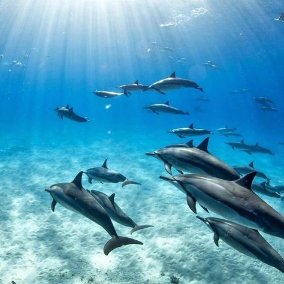
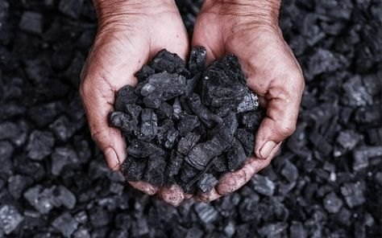

Bienvenue sur notre site dédié à la sensibilisation aux impacts écologiques des grands événements sportifs. À travers des articles, des études de cas et des témoignages, nous mettons en lumière les conséquences environnementales souvent négligées.
Le surf, en tant qu'activité sportive, peut avoir des impacts néfastes sur les animaux marins, surtout lorsqu'il est intégré dans des événements sportifs de grande envergure. Voici quelques façons dont le surf peut affecter la vie marine :
Pollution : Les événements sportifs attirent souvent un grand nombre de spectateurs, ce qui peut entraîner une augmentation des déchets, de la pollution sonore et de la pollution de l'eau. Les déchets plastiques, les produits chimiques et les débris laissés sur les plages peuvent nuire à la faune marine, en particulier aux oiseaux, aux tortues et aux poissons.
Perturbation des comportements : Le bruit et l'agitation générés par les compétitions peuvent perturber le comportement des animaux marins. Par exemple, les mammifères marins comme les dauphins et les baleines peuvent être affectés par le bruit des vagues et des activités humaines, ce qui peut les éloigner de leurs habitats ou perturber leurs schémas de migration.
Impact sur les écosystèmes : Les événements de surf peuvent également affecter les écosystèmes marins en modifiant les courants et les vagues, ce qui peut avoir des conséquences sur la répartition des espèces et la santé des récifs coralliens. Les compétitions de surf nécessitent souvent des aménagements sur les plages et dans les zones côtières, ce qui peut perturber les habitats naturels des animaux marins. La construction de structures temporaires, comme des tribunes ou des zones de compétition, peut détruire des habitats essentiels pour les espèces locales.
L'organisation d'événements sportifs tels que le ski au Qatar, un pays connu pour son climat désertique, soulève des préoccupations écologiques significatives. Voici quelques-uns des impacts écologiques associés à de tels événements :
Consommation d'eau : La création de pistes de ski artificielles nécessite une quantité considérable d'eau, souvent provenant de ressources déjà limitées dans des régions arides comme le Qatar. L'irrigation des pistes et la production de neige artificielle peuvent exacerber la rareté de l'eau, affectant ainsi l'approvisionnement en eau pour les populations locales et les écosystèmes environnants.
Énergie et émissions de carbone : Les infrastructures nécessaires pour soutenir des événements de ski, comme les remontées mécaniques, les systèmes de production de neige et les installations de loisirs, consomment une grande quantité d'énergie. Si cette énergie provient de sources non renouvelables, cela contribue aux émissions de gaz à effet de serre, aggravant ainsi le changement climatique.
Pollution: Les événements sportifs attirent souvent un grand nombre de spectateurs, ce qui peut entraîner une augmentation des déchets, de la pollution sonore et de la pollution de l'air. Les déchets plastiques et autres débris laissés par les visiteurs peuvent nuire à l'environnement local. Les activités humaines associées aux événements de ski peuvent perturber les comportements des animaux sauvages, les forçant à s'éloigner de leurs habitats naturels. Cela peut avoir des conséquences sur leur reproduction, leur alimentation et leur survie.
Dépendance à la technologie : Le ski dans des environnements non naturels repose souvent sur des technologies avancées pour maintenir les conditions de neige. Cela peut créer une dépendance à des solutions artificielles qui ne sont pas durables à long terme.
Cette application innovante permet aux utilisateurs de découvrir une multitude de sports à pratiquer sur chaque continent, tout en respectant l'environnement. Grâce à une interface conviviale, elle offre une carte interactive où les utilisateurs peuvent explorer des activités sportives adaptées aux spécificités écologiques de chaque région. Chaque sport est accompagné d'informations sur son impact environnemental ainsi que des conseils pour le pratiquer de manière durable.
Encourager les spectateurs à utiliser des moyens de transport écologiques, comme le covoiturage, les transports en commun, le vélo ou la marche. Les organisateurs peuvent offrir des réductions sur les billets pour ceux qui utilisent des options de transport durables.